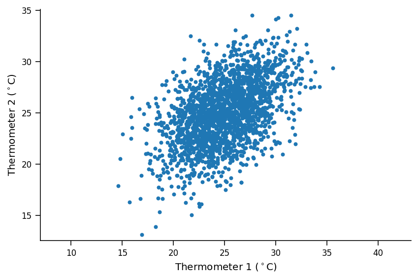
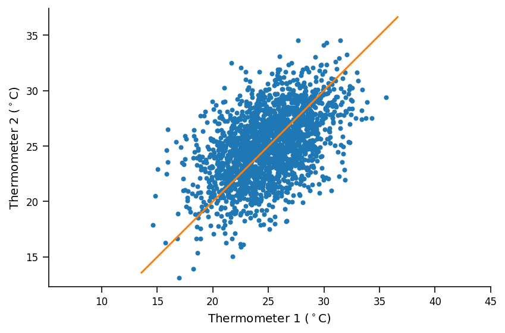

Tutorial 1: Variational Autoencoders (VAEs)
Contents


Tutorial 1: Variational Autoencoders (VAEs)¶
Week 2, Day 5: Generative Models
By Neuromatch Academy
Content creators: Saeed Salehi, Spiros Chavlis, Vikash Gilja
Content reviewers: Diptodip Deb, Kelson Shilling-Scrivo
Content editor: Charles J Edelson, Spiros Chavlis
Production editors: Saeed Salehi, Gagana B, Spiros Chavlis
Inspired from UPenn course: Instructor: Konrad Kording, Original Content creators: Richard Lange, Arash Ash
Our 2021 Sponsors, including Presenting Sponsor Facebook Reality Labs

Tutorial Objectives¶
In the first tutorial of the Generative Models day, we are going to
Think about unsupervised learning / Generative Models and get a bird’s eye view of why it is useful
Build intuition about latent variables
See the connection between AutoEncoders and PCA
Start thinking about neural networks as generative models by contrasting AutoEncoders and Variational AutoEncoders
Setup¶
Install dependencies¶
# @title Install dependencies
# @markdown #### Please ignore *errors* and/or *warnings* during installation.
# @markdown ##### Install `Huggingface BigGAN` library
!pip install pytorch-pretrained-biggan --quiet
!pip install Pillow libsixel-python --quiet
!pip install git+https://github.com/NeuromatchAcademy/evaltools --quiet
from evaltools.airtable import AirtableForm
# Generate airtable form
atform = AirtableForm('appn7VdPRseSoMXEG','W2D5_T1','https://portal.neuromatchacademy.org/api/redirect/to/9c55f6cb-cdf9-4429-ac1c-ec44fe64c303')
# Imports
import torch
import random
import numpy as np
import matplotlib.pylab as plt
import torch.nn as nn
import torch.nn.functional as F
from torch.utils.data import DataLoader
import torchvision
from torchvision import datasets, transforms
from pytorch_pretrained_biggan import one_hot_from_names
from tqdm.notebook import tqdm, trange
---------------------------------------------------------------------------
ModuleNotFoundError Traceback (most recent call last)
/tmp/ipykernel_62129/4076275672.py in <module>
10 from torch.utils.data import DataLoader
11
---> 12 import torchvision
13 from torchvision import datasets, transforms
14
/opt/hostedtoolcache/Python/3.7.13/x64/lib/python3.7/site-packages/torchvision/__init__.py in <module>
5 from torchvision import datasets
6 from torchvision import io
----> 7 from torchvision import models
8 from torchvision import ops
9 from torchvision import transforms
/opt/hostedtoolcache/Python/3.7.13/x64/lib/python3.7/site-packages/torchvision/models/__init__.py in <module>
16 from . import feature_extraction
17 from . import optical_flow
---> 18 from . import quantization
19 from . import segmentation
20 from . import video
/opt/hostedtoolcache/Python/3.7.13/x64/lib/python3.7/site-packages/torchvision/models/quantization/__init__.py in <module>
----> 1 from .mobilenet import *
2 from .resnet import *
3 from .googlenet import *
4 from .inception import *
5 from .shufflenetv2 import *
/opt/hostedtoolcache/Python/3.7.13/x64/lib/python3.7/site-packages/torchvision/models/quantization/mobilenet.py in <module>
----> 1 from .mobilenetv2 import QuantizableMobileNetV2, mobilenet_v2, __all__ as mv2_all
2 from .mobilenetv3 import QuantizableMobileNetV3, mobilenet_v3_large, __all__ as mv3_all
3
4 __all__ = mv2_all + mv3_all
/opt/hostedtoolcache/Python/3.7.13/x64/lib/python3.7/site-packages/torchvision/models/quantization/mobilenetv2.py in <module>
3 from torch import Tensor
4 from torch import nn
----> 5 from torch.ao.quantization import QuantStub, DeQuantStub
6 from torchvision.models.mobilenetv2 import InvertedResidual, MobileNetV2, model_urls
7
ModuleNotFoundError: No module named 'torch.ao.quantization'
Figure settings¶
# @title Figure settings
import ipywidgets as widgets
from ipywidgets import IntSlider, HBox, Layout, VBox
from ipywidgets import interactive_output, Dropdown
%config InlineBackend.figure_format = 'retina'
plt.style.use("https://raw.githubusercontent.com/NeuromatchAcademy/content-creation/main/nma.mplstyle")
Helper functions¶
# @title Helper functions
def image_moments(image_batches, n_batches=None):
"""
Compute mean and covariance of all pixels
from batches of images
Args:
Image_batches: tuple
Image batches
n_batches: int
Number of Batch size
Returns:
m1: float
Mean of all pixels
cov: float
Covariance of all pixels
"""
m1, m2 = torch.zeros((), device=DEVICE), torch.zeros((), device=DEVICE)
n = 0
for im in tqdm(image_batches, total=n_batches, leave=False,
desc='Computing pixel mean and covariance...'):
im = im.to(DEVICE)
b = im.size()[0]
im = im.view(b, -1)
m1 = m1 + im.sum(dim=0)
m2 = m2 + (im.view(b,-1,1) * im.view(b,1,-1)).sum(dim=0)
n += b
m1, m2 = m1/n, m2/n
cov = m2 - m1.view(-1,1)*m1.view(1,-1)
return m1.cpu(), cov.cpu()
def interpolate(A, B, num_interps):
"""
Function to interpolate between images.
It does this by linearly interpolating between the
probability of each category you select and linearly
interpolating between the latent vector values.
Args:
A: list
List of categories
B: list
List of categories
num_interps: int
Quantity of pixel grids
Returns:
Interpolated np.ndarray
"""
if A.shape != B.shape:
raise ValueError('A and B must have the same shape to interpolate.')
alphas = np.linspace(0, 1, num_interps)
return np.array([(1-a)*A + a*B for a in alphas])
def kl_q_p(zs, phi):
"""
Given [b,n,k] samples of z drawn
from q, compute estimate of KL(q||p).
phi must be size [b,k+1]
This uses mu_p = 0 and sigma_p = 1,
which simplifies the log(p(zs)) term to
just -1/2*(zs**2)
Args:
zs: list
Samples
phi: list
Relative entropy
Returns:
Size of log_q and log_p is [b,n,k].
Sum along [k] but mean along [b,n]
"""
b, n, k = zs.size()
mu_q, log_sig_q = phi[:,:-1], phi[:,-1]
log_p = -0.5*(zs**2)
log_q = -0.5*(zs - mu_q.view(b,1,k))**2 / log_sig_q.exp().view(b,1,1)**2 - log_sig_q.view(b,1,-1)
# Size of log_q and log_p is [b,n,k].
# Sum along [k] but mean along [b,n]
return (log_q - log_p).sum(dim=2).mean(dim=(0,1))
def log_p_x(x, mu_xs, sig_x):
"""
Given [batch, ...] input x and
[batch, n, ...] reconstructions, compute
pixel-wise log Gaussian probability
Sum over pixel dimensions, but mean over batch
and samples.
Args:
x: np.ndarray
Input Data
mu_xs: np.ndarray
Log of mean of samples
sig_x: np.ndarray
Log of standard deviation
Returns:
Mean over batch and samples.
"""
b, n = mu_xs.size()[:2]
# Flatten out pixels and add a singleton
# dimension [1] so that x will be
# implicitly expanded when combined with mu_xs
x = x.reshape(b, 1, -1)
_, _, p = x.size()
squared_error = (x - mu_xs.view(b, n, -1))**2 / (2*sig_x**2)
# Size of squared_error is [b,n,p]. log prob is
# by definition sum over [p].
# Expected value requires mean over [n].
# Handling different size batches
# requires mean over [b].
return -(squared_error + torch.log(sig_x)).sum(dim=2).mean(dim=(0,1))
def pca_encoder_decoder(mu, cov, k):
"""
Compute encoder and decoder matrices
for PCA dimensionality reduction
Args:
mu: np.ndarray
Mean
cov: float
Covariance
k: int
Dimensionality
Returns:
Nothing
"""
mu = mu.view(1,-1)
u, s, v = torch.svd_lowrank(cov, q=k)
W_encode = v / torch.sqrt(s)
W_decode = u * torch.sqrt(s)
def pca_encode(x):
"""
Encoder: Subtract mean image and
project onto top K eigenvectors of
the data covariance
Args:
x: torch.tensor
Input data
Returns:
PCA Encoding
"""
return (x.view(-1,mu.numel()) - mu) @ W_encode
def pca_decode(h):
"""
Decoder: un-project then add back in the mean
Args:
h: torch.tensor
Hidden layer data
Returns:
PCA Decoding
"""
return (h @ W_decode.T) + mu
return pca_encode, pca_decode
def cout(x, layer):
"""
Unnecessarily complicated but complete way to
calculate the output depth, height
and width size for a Conv2D layer
Args:
x: tuple
Input size (depth, height, width)
layer: nn.Conv2d
The Conv2D layer
Returns:
Tuple of out-depth/out-height and out-width
Output shape as given in [Ref]
Ref:
https://pytorch.org/docs/stable/generated/torch.nn.Conv2d.html
"""
assert isinstance(layer, nn.Conv2d)
p = layer.padding if isinstance(layer.padding, tuple) else (layer.padding,)
k = layer.kernel_size if isinstance(layer.kernel_size, tuple) else (layer.kernel_size,)
d = layer.dilation if isinstance(layer.dilation, tuple) else (layer.dilation,)
s = layer.stride if isinstance(layer.stride, tuple) else (layer.stride,)
in_depth, in_height, in_width = x
out_depth = layer.out_channels
out_height = 1 + (in_height + 2 * p[0] - (k[0] - 1) * d[0] - 1) // s[0]
out_width = 1 + (in_width + 2 * p[-1] - (k[-1] - 1) * d[-1] - 1) // s[-1]
return (out_depth, out_height, out_width)
Plotting functions¶
# @title Plotting functions
def plot_gen_samples_ppca(therm1, therm2, therm_data_sim):
"""
Plotting generated samples
Args:
therm1: list
Thermometer 1
them2: list
Thermometer 2
therm_data_sim: list
Generated (simulate, draw) `n_samples` from pPCA model
Returns:
Nothing
"""
plt.plot(therm1, therm2, '.', c='c', label='training data')
plt.plot(therm_data_sim[0], therm_data_sim[1], '.', c='m', label='"generated" data')
plt.axis('equal')
plt.xlabel('Thermometer 1 ($^\circ$C)')
plt.ylabel('Thermometer 2 ($^\circ$C)')
plt.legend()
plt.show()
def plot_linear_ae(lin_losses):
"""
Plotting linear autoencoder
Args:
lin_losses: list
Log of linear autoencoder MSE losses
Returns:
Nothing
"""
plt.figure()
plt.plot(lin_losses)
plt.ylim([0, 2*torch.as_tensor(lin_losses).median()])
plt.xlabel('Training batch')
plt.ylabel('MSE Loss')
plt.show()
def plot_conv_ae(lin_losses, conv_losses):
"""
Plotting convolutional autoencoder
Args:
lin_losses: list
Log of linear autoencoder MSE losses
conv_losses: list
Log of convolutional model MSe losses
Returns:
Nothing
"""
plt.figure()
plt.plot(lin_losses)
plt.plot(conv_losses)
plt.legend(['Lin AE', 'Conv AE'])
plt.xlabel('Training batch')
plt.ylabel('MSE Loss')
plt.ylim([0,
2*max(torch.as_tensor(conv_losses).median(),
torch.as_tensor(lin_losses).median())])
plt.show()
def plot_images(images, h=3, w=3, plt_title=''):
"""
Helper function to plot images
Args:
images: torch.tensor
Images
h: int
Image height
w: int
Image width
plt_title: string
Plot title
Returns:
Nothing
"""
plt.figure(figsize=(h*2, w*2))
plt.suptitle(plt_title, y=1.03)
for i in range(h*w):
plt.subplot(h, w, i + 1)
plot_torch_image(images[i])
plt.axis('off')
plt.show()
def plot_phi(phi, num=4):
"""
Contour plot of relative entropy across samples
Args:
phi: list
Log of relative entropu changes
num: int
Number of interations
"""
plt.figure(figsize=(12, 3))
for i in range(num):
plt.subplot(1, num, i + 1)
plt.scatter(zs[i, :, 0], zs[i, :, 1], marker='.')
th = torch.linspace(0, 6.28318, 100)
x, y = torch.cos(th), torch.sin(th)
# Draw 2-sigma contours
plt.plot(
2*x*phi[i, 2].exp().item() + phi[i, 0].item(),
2*y*phi[i, 2].exp().item() + phi[i, 1].item()
)
plt.xlim(-5, 5)
plt.ylim(-5, 5)
plt.grid()
plt.axis('equal')
plt.suptitle('If rsample() is correct, then most but not all points should lie in the circles')
plt.show()
def plot_torch_image(image, ax=None):
"""
Helper function to plot torch image
Args:
image: torch.tensor
Image
ax: plt object
If None, plt.gca()
Returns:
Nothing
"""
ax = ax if ax is not None else plt.gca()
c, h, w = image.size()
if c==1:
cm = 'gray'
else:
cm = None
# Torch images have shape (channels, height, width)
# but matplotlib expects
# (height, width, channels) or just
# (height,width) when grayscale
im_plt = torch.clip(image.detach().cpu().permute(1,2,0).squeeze(), 0.0, 1.0)
ax.imshow(im_plt, cmap=cm)
ax.set_xticks([])
ax.set_yticks([])
ax.spines['right'].set_visible(False)
ax.spines['top'].set_visible(False)
Set random seed¶
Executing set_seed(seed=seed) you are setting the seed
# @title Set random seed
# @markdown Executing `set_seed(seed=seed)` you are setting the seed
# For DL its critical to set the random seed so that students can have a
# baseline to compare their results to expected results.
# Read more here: https://pytorch.org/docs/stable/notes/randomness.html
# Call `set_seed` function in the exercises to ensure reproducibility.
import random
import torch
def set_seed(seed=None, seed_torch=True):
"""
Function that controls randomness. NumPy and random modules must be imported.
Args:
seed : Integer
A non-negative integer that defines the random state. Default is `None`.
seed_torch : Boolean
If `True` sets the random seed for pytorch tensors, so pytorch module
must be imported. Default is `True`.
Returns:
Nothing.
"""
if seed is None:
seed = np.random.choice(2 ** 32)
random.seed(seed)
np.random.seed(seed)
if seed_torch:
torch.manual_seed(seed)
torch.cuda.manual_seed_all(seed)
torch.cuda.manual_seed(seed)
torch.backends.cudnn.benchmark = False
torch.backends.cudnn.deterministic = True
print(f'Random seed {seed} has been set.')
# In case that `DataLoader` is used
def seed_worker(worker_id):
"""
DataLoader will reseed workers following randomness in
multi-process data loading algorithm.
Args:
worker_id: integer
ID of subprocess to seed. 0 means that
the data will be loaded in the main process
Refer: https://pytorch.org/docs/stable/data.html#data-loading-randomness for more details
Returns:
Nothing
"""
worker_seed = torch.initial_seed() % 2**32
np.random.seed(worker_seed)
random.seed(worker_seed)
Set device (GPU or CPU). Execute set_device()¶
# @title Set device (GPU or CPU). Execute `set_device()`
# especially if torch modules used.
# Inform the user if the notebook uses GPU or CPU.
def set_device():
"""
Set the device. CUDA if available, CPU otherwise
Args:
None
Returns:
Nothing
"""
device = "cuda" if torch.cuda.is_available() else "cpu"
if device != "cuda":
print("WARNING: For this notebook to perform best, "
"if possible, in the menu under `Runtime` -> "
"`Change runtime type.` select `GPU` ")
else:
print("GPU is enabled in this notebook.")
return device
SEED = 2021
set_seed(seed=SEED)
DEVICE = set_device()
Random seed 2021 has been set.
WARNING: For this notebook to perform best, if possible, in the menu under `Runtime` -> `Change runtime type.` select `GPU`
Download wordnet dataset¶
# @title Download `wordnet` dataset
"""
NLTK Download:
import nltk
nltk.download('wordnet')
"""
import os, requests, zipfile
os.environ['NLTK_DATA'] = 'nltk_data/'
fnames = ['wordnet.zip', 'omw-1.4.zip']
urls = ['https://osf.io/ekjxy/download', 'https://osf.io/kuwep/download']
for fname, url in zip(fnames, urls):
r = requests.get(url, allow_redirects=True)
with open(fname, 'wb') as fd:
fd.write(r.content)
with zipfile.ZipFile(fname, 'r') as zip_ref:
zip_ref.extractall('nltk_data/corpora')
Section 1: Generative models¶
Time estimate: ~15mins
Please run the cell after the video to download BigGAN (a generative model) and a few standard image datasets while the video plays.
Video 1: Generative Modeling¶
Download BigGAN (a generative model) and a few standard image datasets
# @markdown Download BigGAN (a generative model) and a few standard image datasets
## Initially was downloaded directly
# biggan_model = BigGAN.from_pretrained('biggan-deep-256')
url = "https://osf.io/3yvhw/download"
fname = "biggan_deep_256"
r = requests.get(url, allow_redirects=True)
with open(fname, 'wb') as fd:
fd.write(r.content)
biggan_model = torch.load(fname)
Section 1.1: Generating Images from BigGAN¶
To demonstrate the power of generative models, we are giving you a sneak peek of a fully trained generative model called BigGAN. You’ll see it again (with more background under your belt) later today. For now, let’s just focus on BigGAN as a generative model. Specifically, BigGAN is a class conditional generative model for \(128 \times 128\) images. The classes are based on categorical labels that describe the images and images are generated based upon a vector (\(z\) from the video lecture) and the probability that the image comes from a specific discrete category.
For now, don’t worry about the specifics of the model other than the fact that it generates images based on the vector and the category label.
To explore the space of generated images, we’ve provided you with a widget that allows you to select a category label and to alter the value of the vector. The vector is a 128-D, which may seem high dimensional, but is much lower-dimensional than a \(128 \times 128\) image! To simplify usability the widget limits the magnitude of the vector and constrains all entries to be equal (so you are only exploring a subset of the possible images that can be generated).
Interactive Demo 1.1: BigGAN Generator¶
BigGAN Image Generator (the updates may take a few seconds)
# @markdown BigGAN Image Generator (the updates may take a few seconds)
# category = 'German shepherd' # @param ['tench', 'magpie', 'jellyfish', 'German shepherd', 'bee', 'acoustic guitar', 'coffee mug', 'minibus', 'monitor']
# z_magnitude = -16 # @param {type:"slider", min:-50, max:50, step:1}
def sample_from_biggan(category, z_magnitude):
"""
Sample from BigGAN Image Generator
Args:
category: string
Category
z_magnitude: int
Magnitude of variation vector
Returns:
Nothing
"""
unit_vector = np.ones((1, 128))/np.sqrt(128)
z = z_magnitude * unit_vector
y = one_hot_from_names(category, batch_size=1)
z = torch.from_numpy(z)
z = z.float()
y = torch.from_numpy(y)
# Move to GPU
z = z.to(device=set_device())
y = y.to(device=set_device())
biggan_model.to(device=set_device())
with torch.no_grad():
output = biggan_model(z, y, 1)
# Back to CPU
output = output.to('cpu')
# The output layer of BigGAN has a tanh layer,
# resulting the range of [-1, 1] for the output image
# Therefore, we normalize the images properly to [0, 1]
# range.
# Clipping is only in case of numerical instability
# problems
output = torch.clip(((output.detach().clone() + 1) / 2.0), 0, 1)
plt.imshow(output.squeeze().moveaxis(0,-1))
plt.axis('off')
z_slider = IntSlider(min=-15, max=15, step=1, value=0,
continuous_update=False,
description='Z Magnitude',
layout=Layout(width='440px'))
category_dropdown = Dropdown(
options=['tench', 'magpie', 'jellyfish', 'German shepherd', 'bee',
'acoustic guitar', 'coffee mug', 'minibus', 'monitor'],
value="German shepherd",
description="Category: ")
widgets_ui = VBox([category_dropdown, z_slider])
widgets_out = interactive_output(sample_from_biggan,
{
'z_magnitude': z_slider,
'category': category_dropdown
}
)
display(widgets_ui, widgets_out)
Think! 1.1: Generated images¶
As you alter the magnitude of the vector, what do you note about the relationship between the different generated images? What do you note about the relationship between the image and the category label as you increase the magnitude of the vector?
Student Response¶
# @title Student Response
from ipywidgets import widgets
text=widgets.Textarea(
value='Type your answer here and click on `Submit!`',
placeholder='Type something',
description='',
disabled=False
)
button = widgets.Button(description="Submit!")
display(text,button)
def on_button_clicked(b):
atform.add_answer('q1' , text.value)
print("Submission successful!")
button.on_click(on_button_clicked)
# to_remove explanation
"""
This is called the truncation trick, i.e., truncating a z vector by resampling
the values with magnitude above a chosen threshold lead to improvement in
individual sample quality at the cost of a reduction in overall sample variety.
""";
Section 1.2: Interpolating Images with BigGAN¶
This next widget allows you to interpolate between two generated images. It does this by linearly interpolating between the probability of each category you select and linearly interpolating between the latent vector values.
Interactive Demo 1.2: BigGAN Interpolation¶
BigGAN Interpolation Widget (the updates may take a few seconds)
# @markdown BigGAN Interpolation Widget (the updates may take a few seconds)
def interpolate_biggan(category_A, z_magnitude_A,
category_B, z_magnitude_B):
"""
Interpolation function with BigGan
Args:
category_A: string
Category specification
category_B: string
Category specification
z_magnitude_A: int
Magnitude of z-vector on category_A
z_magnitude_B: int
Magnitude of z-vector on category_B
Returns:
Nothing
"""
num_interps = 16
# category_A = 'jellyfish' #@param ['tench', 'magpie', 'jellyfish', 'German shepherd', 'bee', 'acoustic guitar', 'coffee mug', 'minibus', 'monitor']
# z_magnitude_A = 0 #@param {type:"slider", min:-10, max:10, step:1}
# category_B = 'German shepherd' #@param ['tench', 'magpie', 'jellyfish', 'German shepherd', 'bee', 'acoustic guitar', 'coffee mug', 'minibus', 'monitor']
# z_magnitude_B = 0 #@param {type:"slider", min:-10, max:10, step:1}
def interpolate_and_shape(A, B, num_interps):
"""
Function to interpolate and shape images.
It does this by linearly interpolating between the
probability of each category you select and linearly
interpolating between the latent vector values.
Args:
A: list
List of categories
B: list
List of categories
num_interps: int
Quantity of pixel grids
Returns:
Interpolated np.ndarray
"""
interps = interpolate(A, B, num_interps)
return (interps.transpose(1, 0, *range(2, len(interps.shape))).reshape(num_interps, *interps.shape[2:]))
unit_vector = np.ones((1, 128))/np.sqrt(128)
z_A = z_magnitude_A * unit_vector
z_B = z_magnitude_B * unit_vector
y_A = one_hot_from_names(category_A, batch_size=1)
y_B = one_hot_from_names(category_B, batch_size=1)
z_interp = interpolate_and_shape(z_A, z_B, num_interps)
y_interp = interpolate_and_shape(y_A, y_B, num_interps)
# Convert to tensor
z_interp = torch.from_numpy(z_interp)
z_interp = z_interp.float()
y_interp = torch.from_numpy(y_interp)
# Move to GPU
z_interp = z_interp.to(DEVICE)
y_interp = y_interp.to(DEVICE)
biggan_model.to(DEVICE)
with torch.no_grad():
output = biggan_model(z_interp, y_interp, 1)
# Back to CPU
output = output.to('cpu')
# The output layer of BigGAN has a tanh layer,
# resulting the range of [-1, 1] for the output image
# Therefore, we normalize the images properly to
# [0, 1] range.
# Clipping is only in case of numerical instability
# problems
output = torch.clip(((output.detach().clone() + 1) / 2.0), 0, 1)
output = output
# Make grid and show generated samples
output_grid = torchvision.utils.make_grid(output,
nrow=min(4, output.shape[0]),
padding=5)
plt.axis('off');
plt.imshow(output_grid.permute(1, 2, 0))
plt.show()
z_A_slider = IntSlider(min=-10, max=10, step=1, value=0,
continuous_update=False, description='Z Magnitude A',
layout=Layout(width='440px'),
style={'description_width': 'initial'})
z_B_slider = IntSlider(min=-10, max=10, step=1, value=0,
continuous_update=False, description='Z Magntude B',
layout=Layout(width='440px'),
style={'description_width': 'initial'})
category_A_dropdown = Dropdown(
options=['tench', 'magpie', 'jellyfish', 'German shepherd', 'bee',
'acoustic guitar', 'coffee mug', 'minibus', 'monitor'],
value="German shepherd",
description="Category A: ")
category_B_dropdown = Dropdown(
options=['tench', 'magpie', 'jellyfish', 'German shepherd', 'bee',
'acoustic guitar', 'coffee mug', 'minibus', 'monitor'],
value="jellyfish",
description="Category B: ")
widgets_ui = VBox([HBox([category_A_dropdown, z_A_slider]),
HBox([category_B_dropdown, z_B_slider])])
widgets_out = interactive_output(interpolate_biggan,
{'category_A': category_A_dropdown,
'z_magnitude_A': z_A_slider,
'category_B': category_B_dropdown,
'z_magnitude_B': z_B_slider})
display(widgets_ui, widgets_out)
Think! 1.2: Interpolating samples from the same category¶
Try interpolating between samples from the same category, samples from similar categories, and samples from very different categories. Do you notice any trends? What does this suggest about the representations of images in the latent space?
Student Response¶
# @title Student Response
from ipywidgets import widgets
text=widgets.Textarea(
value='Type your answer here and click on `Submit!`',
placeholder='Type something',
description='',
disabled=False
)
button = widgets.Button(description="Submit!")
display(text,button)
def on_button_clicked(b):
atform.add_answer('q2' , text.value)
print("Submission successful!")
button.on_click(on_button_clicked)
# to_remove explanation
"""
Our model convincingly interpolates between disparate samples and the nearest
neighbors for its samples are visually distinct, suggesting that our model
does not simply memorize training data.
""";
Section 2: Latent Variable Models¶
Time estimate: ~15mins excluding the Bonus
Video 2: Latent Variable Models¶
In the video, the concept of a latent variable model was introduced. We saw how PCA (principal component analysis) can be extended into a generative model with latent variables called pPCA. For pPCA the latent variables (z in the video) are the projections onto the principal component axes.
The dimensionality of the principal components is typically set to be substantially lower-dimensional than the original data. Thus, the latent variables (the projection onto the principal component axes) are a lower-dimensional representation of the original data (dimensionality reduction!). With pPCA we can estimate the original distribution of the high dimensional data. This allows us to generate data with a distribution that “looks” more like the original data than if we were to only use PCA to generate data from the latent variables. Let’s see how that might look with a simple example.
Coding Exercise 2: pPCA (Bonus)¶
Assume we have two noisy thermometers measuring the temperature of the same room. They both make noisy measurements. The room tends to be around 25°C (that’s 77°F), but can vary around that temperature. If we take lots of readings from the two thermometers over time and plot the paired readings, we might see something like the plot generated below:
Generate example datapoints from the two thermometers
# @markdown Generate example datapoints from the two thermometers
def generate_data(n_samples, mean_of_temps, cov_of_temps, seed):
"""
Generate random data, normally distributed
Args:
n_samples : int
The number of samples to be generated
mean_of_temps : numpy.ndarray
1D array with the mean of temparatures, Kx1
cov_of_temps : numpy.ndarray
2D array with the covariance, , KxK
seed : int
Set random seed for the psudo random generator
Returns:
therm1 : numpy.ndarray
Thermometer 1
therm2 : numpy.ndarray
Thermometer 2
"""
np.random.seed(seed)
therm1, therm2 = np.random.multivariate_normal(mean_of_temps,
cov_of_temps,
n_samples).T
return therm1, therm2
n_samples = 2000
mean_of_temps = np.array([25, 25])
cov_of_temps = np.array([[10, 5], [5, 10]])
therm1, therm2 = generate_data(n_samples, mean_of_temps, cov_of_temps, seed=SEED)
plt.plot(therm1, therm2, '.')
plt.axis('equal')
plt.xlabel('Thermometer 1 ($^\circ$C)')
plt.ylabel('Thermometer 2 ($^\circ$C)')
plt.show()

Let’s model these data with a single principal component. Given that the thermometers are measuring the same actual temperature, the principal component axes will be the identity line. The direction of this axes can be indicated by the unit vector \([1 ~~ 1]~/~\sqrt2\). We could estimate this axes by applying PCA. We can plot this axes, it tells us something about the data, but we can’t generate from it:
Add first PC axes to the plot
# @markdown Add first PC axes to the plot
plt.plot(therm1, therm2, '.')
plt.axis('equal')
plt.xlabel('Thermometer 1 ($^\circ$C)')
plt.ylabel('Thermometer 2 ($^\circ$C)')
plt.plot([plt.axis()[0], plt.axis()[1]],
[plt.axis()[0], plt.axis()[1]])
plt.show()

Step 1: Calculate the parameters of the pPCA model
This part is completed already, so you don’t need to make any edits:
# Project Data onto the principal component axes.
# We could have "learned" this from the data by applying PCA,
# but we "know" the value from the problem definition.
pc_axes = np.array([1.0, 1.0]) / np.sqrt(2.0)
# Thermometers data
therm_data = np.array([therm1, therm2])
# Zero center the data
therm_data_mean = np.mean(therm_data, 1)
therm_data_center = np.outer(therm_data_mean, np.ones(therm_data.shape[1]))
therm_data_zero_centered = therm_data - therm_data_center
# Calculate the variance of the projection on the PC axes
pc_projection = np.matmul(pc_axes, therm_data_zero_centered);
pc_axes_variance = np.var(pc_projection)
# Calculate the residual variance (variance not accounted for by projection on the PC axes)
sensor_noise_std = np.mean(np.linalg.norm(therm_data_zero_centered - np.outer(pc_axes, pc_projection), axis=0, ord=2))
sensor_noise_var = sensor_noise_std **2
Step 2: “Generate” from the pPCA model of the thermometer data.
Complete the code so it properly generates from the pPCA model. At present we aren’t accounting for the “sensor noise” the sensor noise is the variance that the PC axes isn’t accounting for. Thus, you’ll note that the current output sits on the PC axes and doesn’t look like the original data distribution!!
Here is the equation for sampling from the pPCA model:
def gen_from_pPCA(noise_var, data_mean, pc_axes, pc_variance):
"""
Generate samples from pPCA
Args:
noise_var: np.ndarray
Sensor noise variance
data_mean: np.ndarray
Thermometer data mean
pc_axes: np.ndarray
Principal component axes
pc_variance: np.ndarray
The variance of the projection on the PC axes
Returns:
therm_data_sim: np.ndarray
Generated (simulate, draw) `n_samples` from pPCA model
"""
# We are matching this value to the thermometer data so the visualizations look similar
n_samples = 1000
# Randomly sample from z (latent space value)
z = np.random.normal(0.0, np.sqrt(pc_variance), n_samples)
# Sensor noise covariance matrix (∑)
epsilon_cov = [[noise_var, 0.0], [0.0, noise_var]]
# Data mean reshaped for the generation
sim_mean = np.outer(data_mean, np.ones(n_samples))
####################################################################
# Fill in all missing code below (...),
# then remove or comment the line below to test your class
raise NotImplementedError("Please complete the `gen_from_pPCA` function")
####################################################################
# Draw `n_samples` from `np.random.multivariate_normal`
rand_eps = ...
rand_eps = rand_eps.T
# Generate (simulate, draw) `n_samples` from pPCA model
therm_data_sim = ...
return therm_data_sim
# Add event to airtable
atform.add_event('Coding Exercise 2: pPCA')
## Uncomment to test your code
# therm_data_sim = gen_from_pPCA(sensor_noise_var, therm_data_mean, pc_axes, pc_axes_variance)
# plot_gen_samples_ppca(therm1, therm2, therm_data_sim)
# to_remove solution
def gen_from_pPCA(noise_var, data_mean, pc_axes, pc_variance):
"""
Generate samples from pPCA
Args:
noise_var: np.ndarray
Sensor noise variance
data_mean: np.ndarray
Thermometer data mean
pc_axes: np.ndarray
Principal component axes
pc_variance: np.ndarray
The variance of the projection on the PC axes
Returns:
therm_data_sim: np.ndarray
Generated (simulate, draw) `n_samples` from pPCA model
"""
# We are matching this value to the thermometer data so the visualizations look similar
n_samples = 1000
# Randomly sample from z (latent space value)
z = np.random.normal(0.0, np.sqrt(pc_variance), n_samples)
# Sensor noise covariance matrix (∑)
epsilon_cov = [[noise_var, 0.0], [0.0, noise_var]]
# Data mean reshaped for the generation
sim_mean = np.outer(data_mean, np.ones(n_samples))
# Draw `n_samples` from `np.random.multivariate_normal`
rand_eps = np.random.multivariate_normal([0.0, 0.0], epsilon_cov, n_samples)
rand_eps = rand_eps.T
# Generate (simulate, draw) `n_samples` from pPCA model
therm_data_sim = sim_mean + np.outer(pc_axes, z) + rand_eps
return therm_data_sim
# Add event to airtable
atform.add_event('Coding Exercise 2: pPCA')
## Uncomment to test your code
therm_data_sim = gen_from_pPCA(sensor_noise_var, therm_data_mean, pc_axes, pc_axes_variance)
with plt.xkcd():
plot_gen_samples_ppca(therm1, therm2, therm_data_sim)

Section 3: Autoencoders¶
Time estimate: ~30mins
Please run the cell after the video to download MNIST and CIFAR10 image datasets while the video plays.
Video 3: Autoenconders¶
Download MNIST and CIFAR10 datasets
# @markdown Download MNIST and CIFAR10 datasets
import tarfile, requests, os
fname = 'MNIST.tar.gz'
name = 'mnist'
url = 'https://osf.io/y2fj6/download'
if not os.path.exists(name):
print('\nDownloading MNIST dataset...')
r = requests.get(url, allow_redirects=True)
with open(fname, 'wb') as fh:
fh.write(r.content)
print('\nDownloading MNIST completed!\n')
if not os.path.exists(name):
with tarfile.open(fname) as tar:
tar.extractall(name)
os.remove(fname)
else:
print('MNIST dataset has been downloaded.\n')
fname = 'cifar-10-python.tar.gz'
name = 'cifar10'
url = 'https://osf.io/jbpme/download'
if not os.path.exists(name):
print('\nDownloading CIFAR10 dataset...')
r = requests.get(url, allow_redirects=True)
with open(fname, 'wb') as fh:
fh.write(r.content)
print('\nDownloading CIFAR10 completed!')
if not os.path.exists(name):
with tarfile.open(fname) as tar:
tar.extractall(name)
os.remove(fname)
else:
print('CIFAR10 dataset has been dowloaded.')
Downloading MNIST dataset...
Downloading MNIST completed!
Downloading CIFAR10 dataset...
Downloading CIFAR10 completed!
Load MNIST and CIFAR10 image datasets
# @markdown Load MNIST and CIFAR10 image datasets
# See https://pytorch.org/docs/stable/torchvision/datasets.html
# MNIST
mnist = datasets.MNIST('./mnist/',
train=True,
transform=transforms.ToTensor(),
download=False)
mnist_val = datasets.MNIST('./mnist/',
train=False,
transform=transforms.ToTensor(),
download=False)
# CIFAR 10
cifar10 = datasets.CIFAR10('./cifar10/',
train=True,
transform=transforms.ToTensor(),
download=False)
cifar10_val = datasets.CIFAR10('./cifar10/',
train=False,
transform=transforms.ToTensor(),
download=False)
Select a dataset¶
We’ve built today’s tutorial to be flexible. It should work more-or-less out of the box with both MNIST and CIFAR (and other image datasets). MNIST is in many ways simpler, and the results will likely look better and run a bit faster if using MNIST. But we are leaving it up to you to pick which one you want to experiment with!
We encourage pods to coordinate so that some members use MNIST and others use CIFAR10. Keep in mind that the CIFAR dataset may require more learning epochs (longer training required).
def get_data(name='mnist'):
"""
Get data
Args:
name: string
Name of the dataset
Returns:
my_dataset: dataset instance
Instance of dataset
my_dataset_name: string
Name of the dataset
my_dataset_shape: tuple
Shape of dataset
my_dataset_size: int
Size of dataset
my_valset: torch.loader
Validation loader
"""
if name == 'mnist':
my_dataset_name = "MNIST"
my_dataset = mnist
my_valset = mnist_val
my_dataset_shape = (1, 28, 28)
my_dataset_size = 28 * 28
elif name == 'cifar10':
my_dataset_name = "CIFAR10"
my_dataset = cifar10
my_valset = cifar10_val
my_dataset_shape = (3, 32, 32)
my_dataset_size = 3 * 32 * 32
return my_dataset, my_dataset_name, my_dataset_shape, my_dataset_size, my_valset
train_set, dataset_name, data_shape, data_size, valid_set = get_data(name='mnist')
Section 3.1: Conceptual introduction to AutoEncoders¶
Now we’ll create our first autoencoder. It will reduce images down to \(K\) dimensions. The architecture will be quite simple: the input will be linearly mapped to a single hidden (or latent) layer \(\mathbf{h}\) with \(K\) units, which will then be linearly mapped back to an output that is the same size as the input:
The loss function we’ll use will simply be mean squared error (MSE) quantifying how well the reconstruction (\(\mathbf{x'}\)) matches the original image (\(\mathbf{x}\)):
If all goes well, then the AutoEncoder will learn, end to end, a good “encoding” or “compression” of inputs to a latent representation (\(\mathbf{x \longrightarrow h}\)) as well as a good “decoding” of that latent representation to a reconstruction of the original input (\(\mathbf{h \longrightarrow x'}\)).
The first choice to make is the dimensionality of \(\mathbf{h}\). We’ll see more on this below, but For MNIST, 5 to 20 is plenty. For CIFAR, we need more like 50 to 100 dimensions.
Coordinate with your pod to try a variety of values for \(K\) in each dataset so you can compare results.
Coding Exercise 3.1: Linear AutoEncoder Architecture¶
Complete the missing parts of the LinearAutoEncoder class.
The LinearAutoEncoder as two stages: an encoder which linearly maps from inputs of size x_dim = my_dataset_dim to a hidden layer of size h_dim = K (with no nonlinearity), and a decoder which maps back from K up to the number of pixels in each image.
# @markdown #### Run to define the `train_autoencoder` function.
# @markdown Feel free to inspect the training function if the time allows.
# @markdown `train_autoencoder(autoencoder, dataset, device, epochs=20, batch_size=250, seed=0)`
def train_autoencoder(autoencoder, dataset, device, epochs=20, batch_size=250,
seed=0):
"""
Function to train autoencoder
Args:
autoencoder: nn.module
Autoencoder instance
dataset: function
Dataset
device: string
GPU if available. CPU otherwise
epochs: int
Number of epochs [default: 20]
batch_size: int
Batch size
seed: int
Set seed for reproducibility; [default: 0]
Returns:
mse_loss: float
MSE Loss
"""
autoencoder.to(device)
optim = torch.optim.Adam(autoencoder.parameters(),
lr=1e-3,
weight_decay=1e-5)
loss_fn = nn.MSELoss()
g_seed = torch.Generator()
g_seed.manual_seed(seed)
loader = DataLoader(dataset,
batch_size=batch_size,
shuffle=True,
pin_memory=True,
num_workers=2,
worker_init_fn=seed_worker,
generator=g_seed)
mse_loss = torch.zeros(epochs * len(dataset) // batch_size, device=device)
i = 0
for epoch in trange(epochs, desc='Epoch'):
for im_batch, _ in loader:
im_batch = im_batch.to(device)
optim.zero_grad()
reconstruction = autoencoder(im_batch)
# Loss calculation
loss = loss_fn(reconstruction.view(batch_size, -1),
target=im_batch.view(batch_size, -1))
loss.backward()
optim.step()
mse_loss[i] = loss.detach()
i += 1
# After training completes,
# make sure the model is on CPU so we can easily
# do more visualizations and demos.
autoencoder.to('cpu')
return mse_loss.cpu()
class LinearAutoEncoder(nn.Module):
"""
Linear Autoencoder
"""
def __init__(self, x_dim, h_dim):
"""
A Linear AutoEncoder
Args:
x_dim: int
Input dimension
h_dim: int
Hidden dimension, bottleneck dimension, K
Returns:
Nothing
"""
super().__init__()
####################################################################
# Fill in all missing code below (...),
# then remove or comment the line below to test your class
raise NotImplementedError("Please complete the LinearAutoEncoder class!")
####################################################################
# Encoder layer (a linear mapping from x_dim to K)
self.enc_lin = ...
# Decoder layer (a linear mapping from K to x_dim)
self.dec_lin = ...
def encode(self, x):
"""
Encoder function
Args:
x: torch.tensor
Input features
Returns:
x: torch.tensor
Encoded output
"""
####################################################################
# Fill in all missing code below (...),
raise NotImplementedError("Please complete the `encode` function!")
####################################################################
h = ...
return h
def decode(self, h):
"""
Decoder function
Args:
h: torch.tensor
Encoded output
Returns:
x_prime: torch.tensor
Decoded output
"""
####################################################################
# Fill in all missing code below (...),
raise NotImplementedError("Please complete the `decode` function!")
####################################################################
x_prime = ...
return x_prime
def forward(self, x):
"""
Forward pass
Args:
x: torch.tensor
Input data
Returns:
Decoded output
"""
flat_x = x.view(x.size(0), -1)
h = self.encode(flat_x)
return self.decode(h).view(x.size())
# Add event to airtable
atform.add_event('Coding Exercise 3.1: Linear AutoEncoder Architecture')
# Pick your own K
K = 20
set_seed(seed=SEED)
## Uncomment to test your code
# lin_ae = LinearAutoEncoder(data_size, K)
# lin_losses = train_autoencoder(lin_ae, train_set, device=DEVICE, seed=SEED)
# plot_linear_ae(lin_losses)
# to_remove solution
class LinearAutoEncoder(nn.Module):
"""
Linear Autoencoder
"""
def __init__(self, x_dim, h_dim):
"""
A Linear AutoEncoder
Args:
x_dim: int
Input dimension
h_dim: int
Hidden dimension, bottleneck dimension, K
Returns:
Nothing
"""
super().__init__()
# Encoder layer (a linear mapping from x_dim to K)
self.enc_lin = nn.Linear(x_dim, h_dim)
# Decoder layer (a linear mapping from K to x_dim)
self.dec_lin = nn.Linear(h_dim, x_dim)
def encode(self, x):
"""
Encoder function
Args:
x: torch.tensor
Input features
Returns:
x: torch.tensor
Encoded output
"""
h = self.enc_lin(x)
return h
def decode(self, h):
"""
Decoder function
Args:
h: torch.tensor
Encoded output
Returns:
x_prime: torch.tensor
Decoded output
"""
x_prime = self.dec_lin(h)
return x_prime
def forward(self, x):
"""
Forward pass
Args:
x: torch.tensor
Input data
Returns:
Decoded output
"""
flat_x = x.view(x.size(0), -1)
h = self.encode(flat_x)
return self.decode(h).view(x.size())
# Add event to airtable
atform.add_event('Coding Exercise 3.1: Linear AutoEncoder Architecture')
# Pick your own K
K = 20
set_seed(seed=SEED)
## Uncomment to test your code
lin_ae = LinearAutoEncoder(data_size, K)
lin_losses = train_autoencoder(lin_ae, train_set, device=DEVICE, seed=SEED)
with plt.xkcd():
plot_linear_ae(lin_losses)
Comparison to PCA¶
One way to think about AutoEncoders is as a form of dimensionality-reduction. The dimensionality of \(\mathbf{h}\) is much smaller than the dimensionality of \(\mathbf{x}\).
Another common technique for dimensionality reduction is to project data onto the top \(K\) principal components (Principal Component Analysis or PCA). For comparison, let’s also apply PCA for dimensionality reduction.
# PCA requires finding the top K eigenvectors of the data covariance. Start by
# finding the mean and covariance of the pixels in our dataset
g_seed = torch.Generator()
g_seed.manual_seed(SEED)
loader = DataLoader(train_set,
batch_size=32,
pin_memory=True,
num_workers=2,
worker_init_fn=seed_worker,
generator=g_seed)
mu, cov = image_moments((im for im, _ in loader),
n_batches=len(train_set) // 32)
pca_encode, pca_decode = pca_encoder_decoder(mu, cov, K)
Let’s visualize some of the reconstructions (\(\mathbf{x'}\)) side-by-side with the input images (\(\mathbf{x}\)).
Visualize the reconstructions \(\mathbf{x}'\), run this code a few times to see different examples.
# @markdown Visualize the reconstructions $\mathbf{x}'$, run this code a few times to see different examples.
n_plot = 7
plt.figure(figsize=(10, 4.5))
for i in range(n_plot):
idx = torch.randint(len(train_set), size=())
image, _ = train_set[idx]
# Get reconstructed image from autoencoder
with torch.no_grad():
reconstruction = lin_ae(image.unsqueeze(0)).reshape(image.size())
# Get reconstruction from PCA dimensionality reduction
h_pca = pca_encode(image)
recon_pca = pca_decode(h_pca).reshape(image.size())
plt.subplot(3, n_plot, i + 1)
plot_torch_image(image)
if i == 0:
plt.ylabel('Original\nImage')
plt.subplot(3, n_plot, i + 1 + n_plot)
plot_torch_image(reconstruction)
if i == 0:
plt.ylabel(f'Lin AE\n(K={K})')
plt.subplot(3, n_plot, i + 1 + 2*n_plot)
plot_torch_image(recon_pca)
if i == 0:
plt.ylabel(f'PCA\n(K={K})')
plt.show()
Think! 3.1: PCA vs. Linear autoenconder¶
Compare the PCA-based reconstructions to those from the linear autoencoder. Is one better than the other? Are they equally good? Equally bad? How does the choice of \(K\) impact reconstruction quality?
Student Response¶
# @title Student Response
from ipywidgets import widgets
text=widgets.Textarea(
value='Type your answer here and click on `Submit!`',
placeholder='Type something',
description='',
disabled=False
)
button = widgets.Button(description="Submit!")
display(text,button)
def on_button_clicked(b):
atform.add_answer('q3' , text.value)
print("Submission successful!")
button.on_click(on_button_clicked)
# to_remove explanation
"""
Single layered Autoencoder with linear activation function is similar to PCA.
However, the Autoencoder can better capture the curvature in the data and hence,
attempts to encode the most important features since they are capable of
reconstruction anyway but are also prone to overfitting due to a higher number of parameters.
PCA retains projections onto planes with maximum variance (and minimum error) and loses data.
The Autoencoder performs poorly if there are no underlying relationships between the features.
""";
Section 3.2: Building a nonlinear convolutional autoencoder¶
Nonlinear: We’d like to apply autoencoders to learn a more flexible nonlinear mapping between the latent space and the images. Such a mapping can provide a more “expressive” model that better describes the image data than a linear mapping. This can be achieved by adding nonlinear activation functions to our encoder and decoder!
Convolutional: As you saw on the day dedicated to RNNs and CNNs, parameter sharing is often a good idea for images! It’s quite common to use convolutional layers in autoencoders to share parameters across locations in the image.
Side Note: The nn.Linear layer (used in the linear autoencoder above) has a “bias” term, which is a learnable offset parameter separate for each output unit. Just like PCA “centers” the data by subtracting off the mean image (mu) before encoding and adds the average back in during decoding, a bias term in the decoder can effectively account for the first moment (mean) of the data (i.e. the average of all images in the training set). Convolution layers do have bias parameters, but the bias is applied per filter rather than per pixel location. If we’re generating grayscale images (like those in MNIST), then Conv2d will learn only one bias across the entire image.
For some conceptual continuity with both PCA and the nn.Linear layers above, the next block defines a custom BiasLayer for adding a learnable per-pixel offset. This custom layer will be used twice: as the first stage of the encoder and as the final stage of the decoder. Ideally, this means that the rest of the neural net can focus on fitting more interesting fine-grained structure.
class BiasLayer(nn.Module):
"""
Bias Layer
"""
def __init__(self, shape):
"""
Initialise parameters of bias layer
Args:
shape: tuple
Requisite shape of bias layer
Returns:
Nothing
"""
super(BiasLayer, self).__init__()
init_bias = torch.zeros(shape)
self.bias = nn.Parameter(init_bias, requires_grad=True)
def forward(self, x):
"""
Forward pass
Args:
x: torch.tensor
Input features
Returns:
Output of bias layer
"""
return x + self.bias
With that out of the way, we will next define a nonlinear and convolutional autoencoder. Here’s a quick tour of the architecture:
The encoder once again maps from images to \(\mathbf{h}\in\mathbb{R}^K\). This will use a
BiasLayerfollowed by two convolutional layers (nn.Conv2D), followed by flattening and linearly projecting down to \(K\) dimensions. The convolutional layers will haveReLUnonlinearities on their outputs.The decoder inverts this process, taking in vectors of length \(K\) and outputting images. Roughly speaking, its architecture is a “mirror image” of the encoder: the first decoder layer is linear, followed by two deconvolution layers (
ConvTranspose2d). TheConvTranspose2dlayers will haveReLUnonlinearities on their inputs. This “mirror image” between the encoder and decoder is a useful and near-ubiquitous convention. The idea is that the decoder can then learn to approximately invert the encoder, but it is not a strict requirement (and it does not guarantee the decoder will be an exact inverse of the encoder!).
Below is a schematic of the architecture for MNIST. Notice that the width and height dimensions of the image planes reduce after each nn.Conv2d and increase after each nn.ConvTranspose2d. With CIFAR10, the architecture is the same but the exact sizes will differ.

torch.nn.ConvTranspose2d module can be seen as the gradient of Conv2d with respect to its input. It is also known as a fractionally-strided convolution or a deconvolution (although it is not an actual deconvolution operation). The following code demonstrates this change in sizes:
dummy_image = torch.rand(data_shape).unsqueeze(0)
in_channels = data_shape[0]
out_channels = 7
dummy_conv = nn.Conv2d(in_channels=in_channels,
out_channels=out_channels,
kernel_size=5)
dummy_deconv = nn.ConvTranspose2d(in_channels=out_channels,
out_channels=in_channels,
kernel_size=5)
print(f'Size of image is {dummy_image.shape}')
print(f'Size of Conv2D(image) {dummy_conv(dummy_image).shape}')
print(f'Size of ConvTranspose2D(Conv2D(image)) {dummy_deconv(dummy_conv(dummy_image)).shape}')
Coding Exercise 3.2: Fill in code for the ConvAutoEncoder module¶
Complete the ConvAutoEncoder class. We use the helper function cout(torch.Tensor, nn.Conv2D) to calculate the output shape of a nn.Conv2D layer given a tensor with shape (channels, height, width).
class ConvAutoEncoder(nn.Module):
"""
A Convolutional AutoEncoder
"""
def __init__(self, x_dim, h_dim, n_filters=32, filter_size=5):
"""
Initialize parameters of ConvAutoEncoder
Args:
x_dim: tuple
Input dimensions (channels, height, widths)
h_dim: int
Hidden dimension, bottleneck dimension, K
n_filters: int
Number of filters (number of output channels)
filter_size: int
Kernel size
Returns:
Nothing
"""
super().__init__()
channels, height, widths = x_dim
# Encoder input bias layer
self.enc_bias = BiasLayer(x_dim)
# First encoder conv2d layer
self.enc_conv_1 = nn.Conv2d(channels, n_filters, filter_size)
# Output shape of the first encoder conv2d layer given x_dim input
conv_1_shape = cout(x_dim, self.enc_conv_1)
# Second encoder conv2d layer
self.enc_conv_2 = nn.Conv2d(n_filters, n_filters, filter_size)
# Output shape of the second encoder conv2d layer given conv_1_shape input
conv_2_shape = cout(conv_1_shape, self.enc_conv_2)
# The bottleneck is a dense layer, therefore we need a flattenning layer
self.enc_flatten = nn.Flatten()
# Conv output shape is (depth, height, width), so the flatten size is:
flat_after_conv = conv_2_shape[0] * conv_2_shape[1] * conv_2_shape[2]
# Encoder Linear layer
self.enc_lin = nn.Linear(flat_after_conv, h_dim)
####################################################################
# Fill in all missing code below (...),
# then remove or comment the line below to test your class
# Remember that decoder is "undo"-ing what the encoder has done!
raise NotImplementedError("Please complete the `ConvAutoEncoder` class!")
####################################################################
# Decoder Linear layer
self.dec_lin = ...
# Unflatten data to (depth, height, width) shape
self.dec_unflatten = nn.Unflatten(dim=-1, unflattened_size=conv_2_shape)
# First "deconvolution" layer
self.dec_deconv_1 = nn.ConvTranspose2d(n_filters, n_filters, filter_size)
# Second "deconvolution" layer
self.dec_deconv_2 = ...
# Decoder output bias layer
self.dec_bias = BiasLayer(x_dim)
def encode(self, x):
"""
Encoder
Args:
x: torch.tensor
Input features
Returns:
h: torch.tensor
Encoded output
"""
s = self.enc_bias(x)
s = F.relu(self.enc_conv_1(s))
s = F.relu(self.enc_conv_2(s))
s = self.enc_flatten(s)
h = self.enc_lin(s)
return h
def decode(self, h):
"""
Decoder
Args:
h: torch.tensor
Encoded output
Returns:
x_prime: torch.tensor
Decoded output
"""
s = F.relu(self.dec_lin(h))
s = self.dec_unflatten(s)
s = F.relu(self.dec_deconv_1(s))
s = self.dec_deconv_2(s)
x_prime = self.dec_bias(s)
return x_prime
def forward(self, x):
"""
Forward pass
Args:
x: torch.tensor
Input features
Returns:
Decoded output
"""
return self.decode(self.encode(x))
# Add event to airtable
atform.add_event('Coding Exercise 3.2: Fill in code for the ConvAutoEncoder module')
K = 20
set_seed(seed=SEED)
## Uncomment to test your solution
# trained_conv_AE = ConvAutoEncoder(data_shape, K)
# assert trained_conv_AE.encode(train_set[0][0].unsqueeze(0)).numel() == K, "Encoder output size should be K!"
# conv_losses = train_autoencoder(trained_conv_AE, train_set, device=DEVICE, seed=SEED)
# plot_conv_ae(lin_losses, conv_losses)
# to_remove solution
class ConvAutoEncoder(nn.Module):
"""
A Convolutional AutoEncoder
"""
def __init__(self, x_dim, h_dim, n_filters=32, filter_size=5):
"""
Initialize parameters of ConvAutoEncoder
Args:
x_dim: tuple
Input dimensions (channels, height, widths)
h_dim: int
Hidden dimension, bottleneck dimension, K
n_filters: int
Number of filters (number of output channels)
filter_size: int
Kernel size
Returns:
Nothing
"""
super().__init__()
channels, height, widths = x_dim
# Encoder input bias layer
self.enc_bias = BiasLayer(x_dim)
# First encoder conv2d layer
self.enc_conv_1 = nn.Conv2d(channels, n_filters, filter_size)
# Output shape of the first encoder conv2d layer given x_dim input
conv_1_shape = cout(x_dim, self.enc_conv_1)
# Second encoder conv2d layer
self.enc_conv_2 = nn.Conv2d(n_filters, n_filters, filter_size)
# Output shape of the second encoder conv2d layer given conv_1_shape input
conv_2_shape = cout(conv_1_shape, self.enc_conv_2)
# The bottleneck is a dense layer, therefore we need a flattenning layer
self.enc_flatten = nn.Flatten()
# Conv output shape is (depth, height, width), so the flatten size is:
flat_after_conv = conv_2_shape[0] * conv_2_shape[1] * conv_2_shape[2]
# Encoder Linear layer
self.enc_lin = nn.Linear(flat_after_conv, h_dim)
# Decoder Linear layer
self.dec_lin = nn.Linear(h_dim, flat_after_conv)
# Unflatten data to (depth, height, width) shape
self.dec_unflatten = nn.Unflatten(dim=-1, unflattened_size=conv_2_shape)
# First "deconvolution" layer
self.dec_deconv_1 = nn.ConvTranspose2d(n_filters, n_filters, filter_size)
# Second "deconvolution" layer
self.dec_deconv_2 = nn.ConvTranspose2d(n_filters, channels, filter_size)
# Decoder output bias layer
self.dec_bias = BiasLayer(x_dim)
def encode(self, x):
"""
Encoder
Args:
x: torch.tensor
Input features
Returns:
h: torch.tensor
Encoded output
"""
s = self.enc_bias(x)
s = F.relu(self.enc_conv_1(s))
s = F.relu(self.enc_conv_2(s))
s = self.enc_flatten(s)
h = self.enc_lin(s)
return h
def decode(self, h):
"""
Decoder
Args:
h: torch.tensor
Encoded output
Returns:
x_prime: torch.tensor
Decoded output
"""
s = F.relu(self.dec_lin(h))
s = self.dec_unflatten(s)
s = F.relu(self.dec_deconv_1(s))
s = self.dec_deconv_2(s)
x_prime = self.dec_bias(s)
return x_prime
def forward(self, x):
"""
Forward pass
Args:
x: torch.tensor
Input features
Returns:
Decoded output
"""
return self.decode(self.encode(x))
# Add event to airtable
atform.add_event('Coding Exercise 3.2: Fill in code for the ConvAutoEncoder module')
K = 20
set_seed(seed=SEED)
## Uncomment to test your solution
trained_conv_AE = ConvAutoEncoder(data_shape, K)
assert trained_conv_AE.encode(train_set[0][0].unsqueeze(0)).numel() == K, "Encoder output size should be K!"
conv_losses = train_autoencoder(trained_conv_AE, train_set, device=DEVICE, seed=SEED)
with plt.xkcd():
plot_conv_ae(lin_losses, conv_losses)
You should see that the ConvAutoEncoder achieved lower MSE loss than the linear one. If not, you may need to retrain it (or run another few training epochs from where it left off). We make fewer guarantees on this working with CIFAR10, but it should definitely work with MNIST.
Now let’s visually compare the reconstructed images from the linear and nonlinear autoencoders. Keep in mind that both have the same dimensionality for \(\mathbf{h}\)!
Visualize the linear and nonlinear AE outputs
# @markdown Visualize the linear and nonlinear AE outputs
n_plot = 7
plt.figure(figsize=(10, 4.5))
for i in range(n_plot):
idx = torch.randint(len(train_set), size=())
image, _ = train_set[idx]
with torch.no_grad():
# Get reconstructed image from linear autoencoder
lin_recon = lin_ae(image.unsqueeze(0))[0]
# Get reconstruction from deep (nonlinear) autoencoder
nonlin_recon = trained_conv_AE(image.unsqueeze(0))[0]
plt.subplot(3, n_plot, i+1)
plot_torch_image(image)
if i == 0:
plt.ylabel('Original\nImage')
plt.subplot(3, n_plot, i + 1 + n_plot)
plot_torch_image(lin_recon)
if i == 0:
plt.ylabel(f'Lin AE\n(K={K})')
plt.subplot(3, n_plot, i + 1 + 2*n_plot)
plot_torch_image(nonlin_recon)
if i == 0:
plt.ylabel(f'NonLin AE\n(K={K})')
plt.show()
Section 4: Variational Auto-Encoders (VAEs)¶
Time estimate: ~25mins
Please run the cell after the video to train a VAE for MNIST while watching it.
Video 4: Variational Autoencoders¶
Train a VAE for MNIST while watching the video. (Note: this VAE has a 2D latent space. If you are feeling ambitious, edit the code and modify the latent space dimensionality and see what happens.)
# @markdown Train a VAE for MNIST while watching the video. (Note: this VAE has a 2D latent space. If you are feeling ambitious, edit the code and modify the latent space dimensionality and see what happens.)
K_VAE = 2
class ConvVAE(nn.Module):
"""
Convolutional Variational Autoencoder
"""
def __init__(self, K, num_filters=32, filter_size=5):
"""
Initialize parameters of ConvVAE
Args:
K: int
Bottleneck dimensionality
num_filters: int
Number of filters [default: 32]
filter_size: int
Filter size [default: 5]
Returns:
Nothing
"""
super(ConvVAE, self).__init__()
# With padding=0, the number of pixels cut off from
# each image dimension
# is filter_size // 2. Double it to get the amount
# of pixels lost in
# width and height per Conv2D layer, or added back
# in per
# ConvTranspose2D layer.
filter_reduction = 2 * (filter_size // 2)
# After passing input through two Conv2d layers,
# the shape will be
# 'shape_after_conv'. This is also the shape that
# will go into the first
# deconvolution layer in the decoder
self.shape_after_conv = (num_filters,
data_shape[1]-2*filter_reduction,
data_shape[2]-2*filter_reduction)
flat_size_after_conv = self.shape_after_conv[0] \
* self.shape_after_conv[1] \
* self.shape_after_conv[2]
# Define the recognition model (encoder or q) part
self.q_bias = BiasLayer(data_shape)
self.q_conv_1 = nn.Conv2d(data_shape[0], num_filters, 5)
self.q_conv_2 = nn.Conv2d(num_filters, num_filters, 5)
self.q_flatten = nn.Flatten()
self.q_fc_phi = nn.Linear(flat_size_after_conv, K+1)
# Define the generative model (decoder or p) part
self.p_fc_upsample = nn.Linear(K, flat_size_after_conv)
self.p_unflatten = nn.Unflatten(-1, self.shape_after_conv)
self.p_deconv_1 = nn.ConvTranspose2d(num_filters, num_filters, 5)
self.p_deconv_2 = nn.ConvTranspose2d(num_filters, data_shape[0], 5)
self.p_bias = BiasLayer(data_shape)
# Define a special extra parameter to learn
# scalar sig_x for all pixels
self.log_sig_x = nn.Parameter(torch.zeros(()))
def infer(self, x):
"""
Map (batch of) x to (batch of) phi which
can then be passed to
rsample to get z
Args:
x: torch.tensor
Input features
Returns:
phi: np.ndarray
Relative entropy
"""
s = self.q_bias(x)
s = F.relu(self.q_conv_1(s))
s = F.relu(self.q_conv_2(s))
flat_s = s.view(s.size()[0], -1)
phi = self.q_fc_phi(flat_s)
return phi
def generate(self, zs):
"""
Map [b,n,k] sized samples of z to
[b,n,p] sized images
Args:
zs: np.ndarray
Samples
Returns:
mu_zs: np.ndarray
Mean of samples
"""
# Note that for the purposes of passing
# through the generator, we need
# to reshape zs to be size [b*n,k]
b, n, k = zs.size()
s = zs.view(b*n, -1)
s = F.relu(self.p_fc_upsample(s)).view((b*n,) + self.shape_after_conv)
s = F.relu(self.p_deconv_1(s))
s = self.p_deconv_2(s)
s = self.p_bias(s)
mu_xs = s.view(b, n, -1)
return mu_xs
def decode(self, zs):
"""
Decoder
Args:
zs: np.ndarray
Samples
Returns:
Generated images
"""
# Included for compatability with conv-AE code
return self.generate(zs.unsqueeze(0))
def forward(self, x):
"""
Forward pass
Args:
x: torch.tensor
Input image
Returns:
Generated images
"""
# VAE.forward() is not used for training,
# but we'll treat it like a
# classic autoencoder by taking a single
# sample of z ~ q
phi = self.infer(x)
zs = rsample(phi, 1)
return self.generate(zs).view(x.size())
def elbo(self, x, n=1):
"""
Run input end to end through the VAE
and compute the ELBO using n
samples of z
Args:
x: torch.tensor
Input image
n: int
Number of samples of z
Returns:
Difference between true and estimated KL divergence
"""
phi = self.infer(x)
zs = rsample(phi, n)
mu_xs = self.generate(zs)
return log_p_x(x, mu_xs, self.log_sig_x.exp()) - kl_q_p(zs, phi)
def expected_z(phi):
"""
Expected sample entropy
Args:
phi: list
Relative entropy
Returns:
Expected sample entropy
"""
return phi[:, :-1]
def rsample(phi, n_samples):
"""
Sample z ~ q(z;phi)
Output z is size [b,n_samples,K] given
phi with shape [b,K+1]. The first K
entries of each row of phi are the mean of q,
and phi[:,-1] is the log
standard deviation
Args:
phi: list
Relative entropy
n_samples: int
Number of samples
Returns:
Output z is size [b,n_samples,K] given
phi with shape [b,K+1]. The first K
entries of each row of phi are the mean of q,
and phi[:,-1] is the log
standard deviation
"""
b, kplus1 = phi.size()
k = kplus1-1
mu, sig = phi[:, :-1], phi[:,-1].exp()
eps = torch.randn(b, n_samples, k, device=phi.device)
return eps*sig.view(b,1,1) + mu.view(b,1,k)
def train_vae(vae, dataset, epochs=10, n_samples=1000):
"""
Train VAE
Args:
vae: nn.module
Model
dataset: function
Dataset
epochs: int
Epochs
n_samples: int
Number of samples
Returns:
elbo_vals: list
List of values obtained from ELBO
"""
opt = torch.optim.Adam(vae.parameters(), lr=1e-3, weight_decay=0)
elbo_vals = []
vae.to(DEVICE)
vae.train()
loader = DataLoader(dataset, batch_size=250, shuffle=True, pin_memory=True)
for epoch in trange(epochs, desc='Epochs'):
for im, _ in tqdm(loader, total=len(dataset) // 250, desc='Batches', leave=False):
im = im.to(DEVICE)
opt.zero_grad()
loss = -vae.elbo(im)
loss.backward()
opt.step()
elbo_vals.append(-loss.item())
vae.to('cpu')
vae.eval()
return elbo_vals
trained_conv_VarAE = ConvVAE(K=K_VAE)
elbo_vals = train_vae(trained_conv_VarAE, train_set, n_samples=10000)
print(f'Learned sigma_x is {torch.exp(trained_conv_VarAE.log_sig_x)}')
# Uncomment below if you'd like to see the the training
# curve of the evaluated ELBO loss function
# ELBO is the loss function used to train VAEs
# (see lecture!)
plt.figure()
plt.plot(elbo_vals)
plt.xlabel('Batch #')
plt.ylabel('ELBO')
plt.show()
Section 4.1: Components of a VAE¶
Recognition models and density networks
Variational AutoEncoders (VAEs) are a lot like the classic AutoEncoders (AEs), but where we explicitly think about probability distributions. In the language of VAEs, the encoder is replaced with a recognition model, and the decoder is replaced with a density network.
Where in a classic autoencoder the encoder maps from images to a single hidden vector,
in a VAE we would say that a recognition model maps from inputs to entire distributions over hidden vectors,
which we will then sample from. Here \(\mathbf{w_e}\) refers to the weights of the recognition model, which parametarize our distribution generating network. We’ll say more in a moment about what kind of distribution \(q_{\mathbf{w_e}}(\mathbf{z})\) is. Part of what makes VAEs work is that the loss function will require good reconstructions of the input not just for a single \(\mathbf{z}\), but on average from samples of \(\mathbf{z} \sim q_{\mathbf{w_e}}(\mathbf{z})\).
In the classic autoencoder, we had a decoder which maps from hidden vectors to reconstructions of the input:
In a density network, reconstructions are expressed in terms of a distribution:
where, as above, \(p_{\mathbf{w_d}}(\mathbf{x}|\mathbf{z})\) is defined by mapping \(\mathbf{z}\) through a density network then treating the resulting \(f(\mathbf{z};\mathbf{w_d})\) as the mean of a (Gaussian) distribution over \(\mathbf{x}\). Similarly, our reconstruction distribution is parametarized by the weights of the density network.
Section 4.2: Generating novel images from the decoder¶
If we isolate the decoder part of the AutoEncoder, what we have is a neural network that takes as input a vector of size \(K\) and produces as output an image that looks something like our training data. Recall that in our earlier notation, we had an input \(\mathbf{x}\) that was mapped to a low-dimensional hidden representation \(\mathbf{h}\) which was then decoded into a reconstruction of the input, \(\mathbf{x'}\):
Partly as a matter of convention, and partly to distinguish where we are going next from the previous section, we’re going to introduce a new variable, \(\mathbf{z} \in \mathbb{R}^K\), which will take the place of \(\mathbf{h}\). The key difference is that while \(\mathbf{h}\) is produced by the encoder for a particular \(\mathbf{x}\), \(\mathbf{z}\) will be drawn out of thin air from a prior of our choosing:
(Note that it is also common convention to drop the “prime” on \(\mathbf{x}\) when it is no longer being thought of as a “reconstruction”).
Coding Exercise 4.2: Generating images¶
def generate_images(autoencoder, K, n_images=1):
"""
Generate n_images 'new' images from the decoder part of the given
autoencoder.
Args:
autoencoder: nn.module
Autoencoder model
K: int
Bottleneck dimension
n_images: int
Number of images
Returns:
x: torch.tensor
(n_images, channels, height, width) tensor of images
"""
# Concatenate tuples to get (n_images, channels, height, width)
output_shape = (n_images,) + data_shape
with torch.no_grad():
####################################################################
# Fill in all missing code below (...),
# then remove or comment the line below to test your function
raise NotImplementedError("Please complete the `generate_images` function!")
####################################################################
# Sample z from a unit gaussian, pass through autoencoder.decode()
z = ...
x = ...
return x.reshape(output_shape)
# Add event to airtable
atform.add_event('Coding Exercise 4.2: Generating images')
set_seed(seed=SEED)
## Uncomment to test your solution
# images = generate_images(trained_conv_AE, K, n_images=9)
# plot_images(images, plt_title='Images Generated from the Conv-AE')
# images = generate_images(trained_conv_VarAE, K_VAE, n_images=9)
# plot_images(images, plt_title='Images Generated from a Conv-Variational-AE')
# to_remove solution
def generate_images(autoencoder, K, n_images=1):
"""
Generate n_images 'new' images from the decoder part of the given
autoencoder.
Args:
autoencoder: nn.module
Autoencoder model
K: int
Bottleneck dimension
n_images: int
Number of images
Returns:
x: torch.tensor
(n_images, channels, height, width) tensor of images
"""
# Concatenate tuples to get (n_images, channels, height, width)
output_shape = (n_images,) + data_shape
with torch.no_grad():
# Sample z from a unit gaussian, pass through autoencoder.decode()
z = torch.randn(n_images, K)
x = autoencoder.decode(z)
return x.reshape(output_shape)
# Add event to airtable
atform.add_event('Coding Exercise 4.2: Generating images')
set_seed(seed=SEED)
## Uncomment to test your solution
images = generate_images(trained_conv_AE, K, n_images=9)
plot_images(images, plt_title='Images Generated from the Conv-AE')
images = generate_images(trained_conv_VarAE, K_VAE, n_images=9)
plot_images(images, plt_title='Images Generated from a Conv-Variational-AE')
Think! 4.2: AutoEncoders vs. Variational AutoEncoders¶
Compare the images generated by the AutoEncoder to the images generated by the Variational AutoEncoder. You can run the code a few times to see a variety of examples.
Does one set look more like the training set (handwritten digits) than the other? What is driving this difference?
# to_remove explanation
"""
An Autoencoder accepts input, compresses it, and recreates it. On the other hand,
VAEs assume that the source data has some underlying distribution and attempts
to find the distribution parameters. So, VAEs are similar to GANs
(but note that GANs work differently, as we will see in the next tutorials).
""";
Summary¶
Through this tutorial, we have learned
What a generative model is and why we are interested in them.
How latent variable models relate to generative models with the example of pPCA.
What a basic AutoEncoder is and how they relate to other latent variable models.
The basics of Variational AutoEncoders and how they function as generative models.
An introduction to the broad applications of VAEs.
In the next two tutorials we will cover GANs and how to train them.
Airtable Submission Link¶
# @title Airtable Submission Link
from IPython import display as IPydisplay
IPydisplay.HTML(
f"""
<div>
<a href= "{atform.url()}" target="_blank">
<img src="https://github.com/NeuromatchAcademy/course-content-dl/blob/main/tutorials/static/AirtableSubmissionButton.png?raw=1"
alt="button link to Airtable" style="width:410px"></a>
</div>""" )